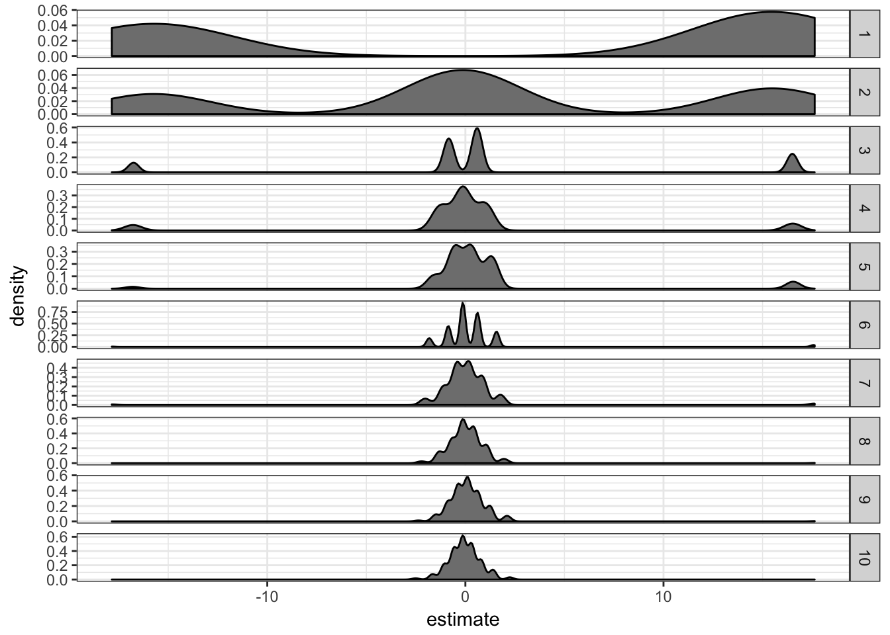
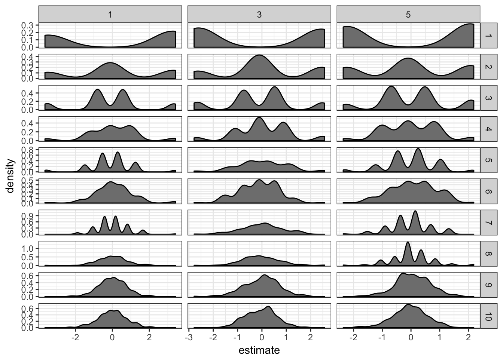
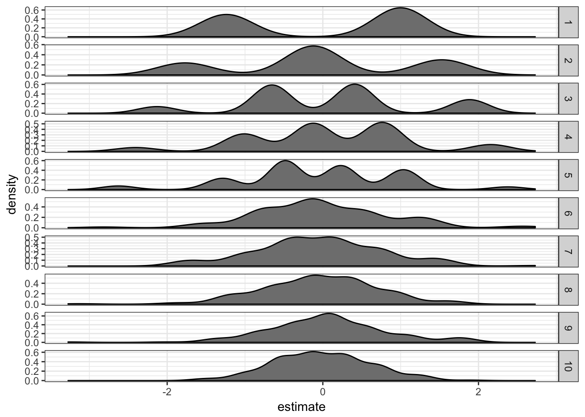
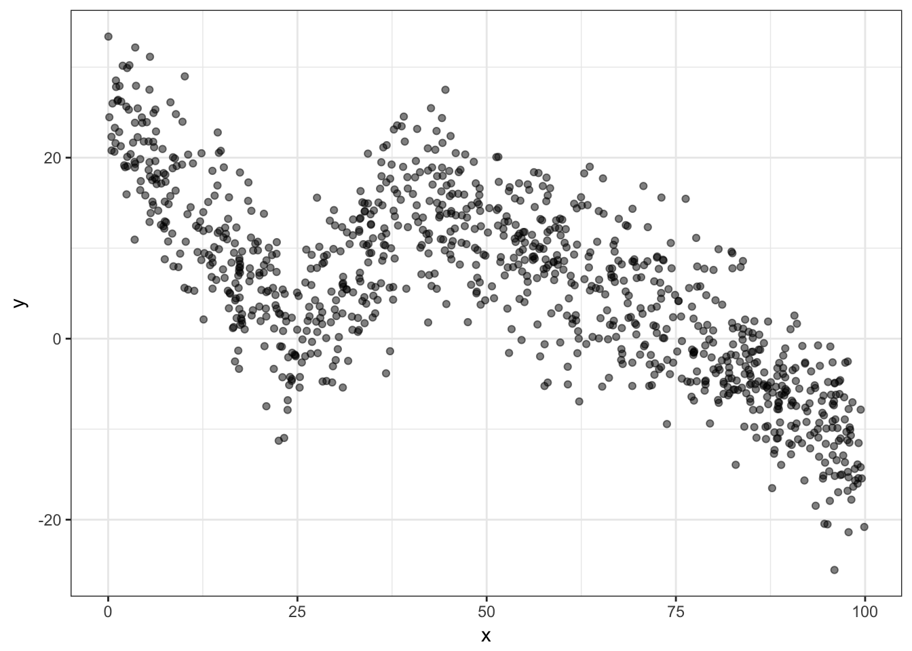
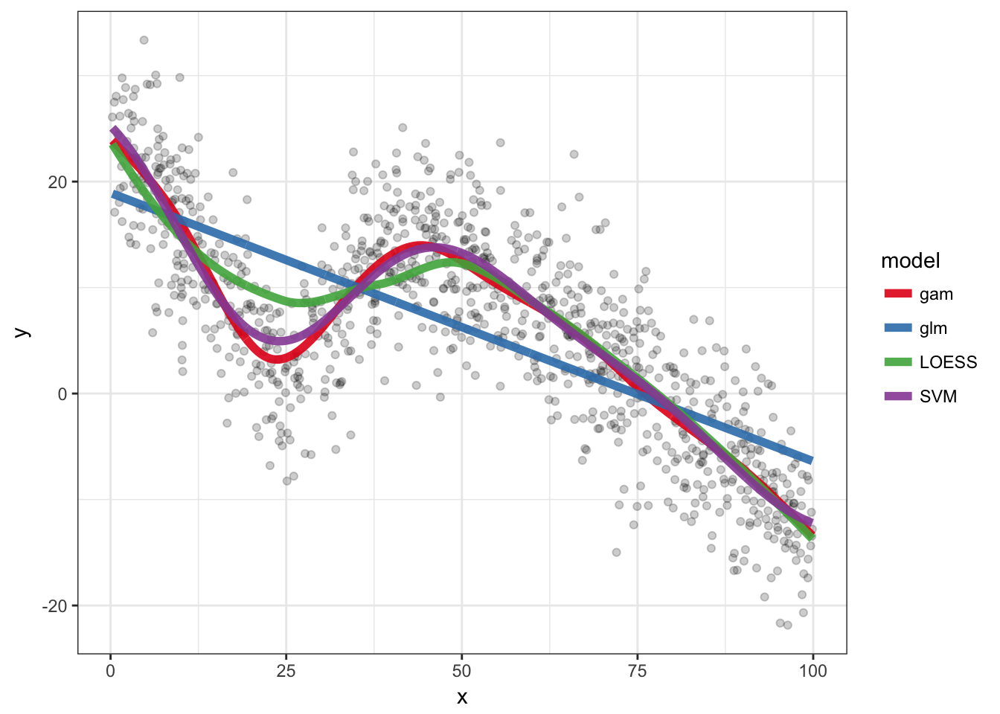

Regression
Sep 16, 2017 stats Rlibrary(ggplot2)
library(broom)
library(magrittr)
library(dplyr)
library(knitr)Logistic regression
One way or another
If we have two binary variables and we want to see if they are associated we could use a logistic regression. How do we decide which variable to be the predictor and which variable to observed variable ?
In theory there shouldn’t be any differences but let’s check with a dummy example:
df = data.frame(x = sample(c(FALSE, TRUE), 100, TRUE))
df$y = df$x
df$y[1:70] = sample(c(FALSE, TRUE), 70, TRUE)
glm(y ~ x, data = df, family = binomial()) %>% tidy %>%
kable| term | estimate | std.error | statistic | p.value |
|---|---|---|---|---|
| (Intercept) | -0.3566749 | 0.2845213 | -1.253597 | 0.2099887 |
| xTRUE | 1.1749853 | 0.4207502 | 2.792596 | 0.0052287 |
glm(x ~ y, data = df, family = binomial()) %>% tidy %>%
kable| term | estimate | std.error | statistic | p.value |
|---|---|---|---|---|
| (Intercept) | -0.6931472 | 0.3162277 | -2.191924 | 0.0283850 |
| yTRUE | 1.1749853 | 0.4207502 | 2.792596 | 0.0052287 |
df$z = runif(100)
glm(y ~ x + z, data = df, family = binomial()) %>%
tidy %>% kable| term | estimate | std.error | statistic | p.value |
|---|---|---|---|---|
| (Intercept) | -0.3384519 | 0.5406594 | -0.6259983 | 0.5313161 |
| xTRUE | 1.1705839 | 0.4350359 | 2.6907754 | 0.0071286 |
| z | -0.0291708 | 0.7361492 | -0.0396262 | 0.9683911 |
glm(x ~ y + z, data = df, family = binomial()) %>%
tidy %>% kable| term | estimate | std.error | statistic | p.value |
|---|---|---|---|---|
| (Intercept) | 0.3038223 | 0.5173140 | 0.5873074 | 0.5569973 |
| yTRUE | 1.1673062 | 0.4343205 | 2.6876608 | 0.0071954 |
| z | -1.7923109 | 0.7477030 | -2.3970893 | 0.0165259 |
Adding another predictor doesn’t change the estimates either.
Interpretation
Just to make I understand the estimates correctly. It represents the log odds ratio change for each “unit” of the predictor. In the case of a binary variable, the log odds ratio between the two groups.
glm(y ~ x, data = df, family = binomial()) %>% tidy %>%
kable| term | estimate | std.error | statistic | p.value |
|---|---|---|---|---|
| (Intercept) | -0.3566749 | 0.2845213 | -1.253597 | 0.2099887 |
| xTRUE | 1.1749853 | 0.4207502 | 2.792596 | 0.0052287 |
odds.y.ifx = mean(subset(df, x)$y)/mean(!subset(df,
x)$y)
odds.y.ifnotx = mean(subset(df, !x)$y)/mean(!subset(df,
!x)$y)
log(odds.y.ifx/odds.y.ifnotx)## [1] 1.174985Extreme cases
How efficient is the logistic regression in cases where there is an imbalance between different types of observations ? For example if just a few genomic regions overlap an interesting annotation and I want to test is the overlap is significant.
Let’s look at the worst cases when there are only 1 observation for a particular class.
df = data.frame(y = sample(c(FALSE, TRUE), 100, TRUE))
df$x = 1:nrow(df) %in% sample.int(nrow(df), 1)
glm(y ~ x, data = df, family = binomial()) %>% tidy %>%
kable| term | estimate | std.error | statistic | p.value |
|---|---|---|---|---|
| (Intercept) | 0.1010961 | 0.2012644 | 0.5023050 | 0.6154530 |
| xTRUE | 15.4649721 | 1455.3975462 | 0.0106259 | 0.9915219 |
Although the significance is low, the estimate seems quite high. I’ll repeat this process a bunch of time and with different number of supporting observations to have an idea of the distribution.
ext.df = lapply(1:500, function(ii) {
res = lapply(1:10, function(ssi) {
df$x = 1:nrow(df) %in% sample.int(nrow(df),
ssi)
glm(y ~ x, data = df, family = binomial()) %>%
tidy %>% mutate(rep = ii, ss = ssi)
})
do.call(rbind, res)
})
ext.df = do.call(rbind, ext.df)ext.df %>% filter(term == "xTRUE") %>% ggplot(aes(x = estimate)) +
geom_density(fill = "grey50") + facet_grid(ss ~
., scales = "free") + theme_bw()
It seems like the estimate “inflation” is problematic mostly when there are only 1 or 2 supporting observations. If there are more than 5 supporting observations the estimate is correctly centered in 0.
This problem is in fact called the problem of separation. There are two approaches to deal with it:
- Firth logistic regression.
- Exact logistic regression.
The rms package from Frank Harell. It implements a penalized maximum likelihood estimation of the model coefficients through the lrm function which has a penalty= parameter.
library(rms)
extrms.df = lapply(1:200, function(ii) {
res = lapply(1:10, function(ssi) {
res = lapply(c(1, 3, 5), function(pen) {
df$x = 1:nrow(df) %in% sample.int(nrow(df),
ssi)
cc = lrm(y ~ x, data = df, penalty = pen)$coefficient
data.frame(term = names(cc), estimate = cc,
rep = ii, ss = ssi, penalty = pen,
stringsAsFactors = FALSE)
})
do.call(rbind, res)
})
do.call(rbind, res)
})
extrms.df = do.call(rbind, extrms.df)extrms.df %>% filter(term == "x") %>% ggplot(aes(x = estimate)) +
geom_density(fill = "grey50") + facet_grid(ss ~
penalty, scales = "free") + theme_bw()
It definitely helps: the estimates are now much closer to 0. I don’t see much difference between penalties 1, 3 or 5.
The logistf package. It implements Firth’s bias reduction method with its logistf function.
library(logistf)
extstf.df = lapply(1:200, function(ii) {
res = lapply(1:10, function(ssi) {
df$x = 1:nrow(df) %in% sample.int(nrow(df),
ssi)
cc = logistf(y ~ x, data = df)$coefficient
data.frame(term = names(cc), estimate = cc,
rep = ii, ss = ssi, stringsAsFactors = FALSE)
})
do.call(rbind, res)
})
extstf.df = do.call(rbind, extstf.df)extstf.df %>% filter(term == "xTRUE") %>% ggplot(aes(x = estimate)) +
geom_density(fill = "grey50") + facet_grid(ss ~
., scales = "free") + theme_bw()
This works well too.
More advanced models
A dummy example with some code for Generalized Additive Models, LOESS and SVM.
nb.samp = 1000
df = data.frame(x = runif(nb.samp, 0, 100))
df$y = rnorm(nb.samp, 0, 5) + abs(df$x - 25)
df$y = ifelse(df$x > 40, rnorm(nb.samp, 0, 5) - df$x *
df$x/300 + 20, df$y)
ggplot(df, aes(x = x, y = y)) + geom_point(alpha = 0.5) +
theme_bw()
glm.o = glm(y ~ x, data = df)
loess.o = loess(y ~ x, data = df)
library(mgcv)
gam.o = gam(y ~ s(x, bs = "cs"), data = df)
library(e1071)
svm.o = svm(y ~ x, data = df)
pred.df = rbind(df %>% mutate(y = predict(glm.o), model = "glm"),
df %>% mutate(y = predict(gam.o), model = "gam"),
df %>% mutate(y = predict(loess.o), model = "LOESS"),
df %>% mutate(y = predict(svm.o), model = "SVM"))
ggplot(df, aes(x = x, y = y)) + geom_point(alpha = 0.2) +
geom_line(aes(colour = model), size = 2, alpha = 0.9,
data = pred.df) + theme_bw() + scale_colour_brewer(palette = "Set1")